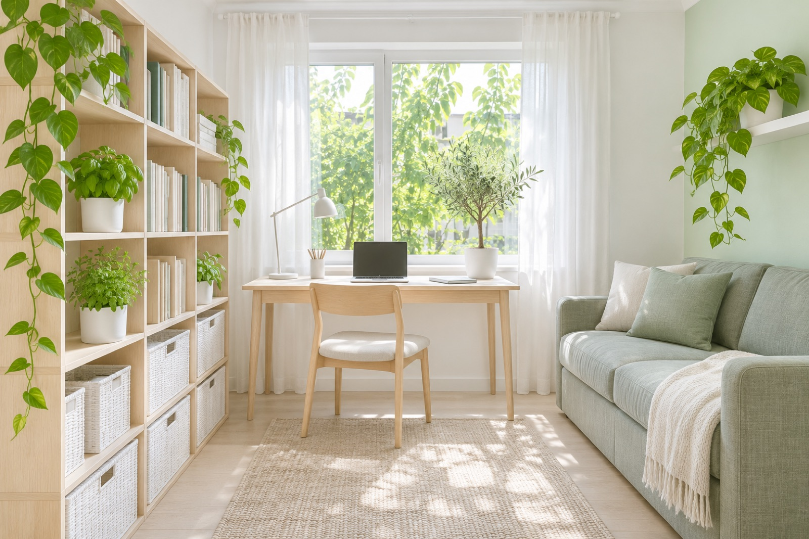

現貨
設計 Guideline
親和無毒風的色彩、字級、間距、圓角與元件規範。scss/_variables.scss，
概覽
NestCraft 晨光蔬果鋪：
05 親和無毒風
- 色系搭配
- 淺色系＋冷色調（薄荷綠、鼠尾草灰、純白）
- UI 視覺特點
有機生鮮感，結帳步驟指引平滑清晰
- 品牌
- NestCraft 原創生活家居選物：專為租屋族與小資家庭設計的模組化家居電商，主打「靈活收納、小坪數友善」。
- 技術
- Bootstrap 5.3＋Sass（sass CLI），沒有打包工具
色系搭配與 UI 視覺特點引用自課程規格文件的風格表。

攝影調性
純白與極淡薄荷的牆、
設計原則
-
方塊拼貼，一律靠左
資訊裝進圓角方塊，方塊之間固定 16px（手機）／24px（992px 以上）。標題靠左，區塊標題列是標題在左、連結在右。
-
一條連續的軌道
購物車、結帳、付款結果的頁首是同一條 8px 軌道，填色從上一步長到這一步。子步驟軌、免運進度、配送進度都是同一套語言。
-
白多、薄荷少
白約 60%、薄荷霧與薄荷約 30%、森林薄荷約 10%。薄荷是面，不是字；文字一律用墨綠、森林薄荷或鼠尾草字。
-
圓體給標題，內文給黑體
標題、按鈕、標籤、價格用 Nunito＋昭源圓體；長段落與表單用 Noto Sans TC，親切但不稚氣。不用 emoji，圖示統一 Bootstrap Icons 線條款。
頁面清單
一共 10 個頁面，guideline.html。
-
首頁
index.htmlbento Hero（薄荷主方塊放主標與兩顆膠囊按鈕、照片方塊、「5 坪」白方塊、「48 小時」森林薄荷方塊）→ 四大價值方塊 → 空間靈感（膠囊分段＋大圖熱點＋迷你商品卡＋整套列）→ 霧薄荷大面板裡的人氣嚴選 → 見證泡泡與承諾方塊 → 薄荷 CTA 面板。
-
商品一覽
products.html沒有側欄：頂部黏性膠囊篩選列（分類 chip、只顯示有現貨、寬度、價格區間、排序），商品 4 欄圓角卡，最後一格是跨 2 欄的薄荷「先量尺寸，再挑家具」方塊；992px 以下篩選收進底部抽屜。
-
商品詳情
product.html以橡木餐桌示範。左邊 4 張圖同時攤開成 bento 圖庫（沒有縮圖列），下方是家具履歷卡；右邊標題卡與購買卡黏住；膠囊分頁（商品詳情、規格、評價）與你可能也會喜歡。
-
購物車
cart.html頁首軌道填到第一節點；金額摘要是頂部的黏性長條（共 4 件、商品小計、免運、應付總額 NT$ 20,250、前往結帳），下方是免運進度軌與圓角品項卡。
-
結帳
checkout.html三欄：左子步驟軌（Scrollspy 標示目前段落）、中間四張段落卡、右邊黏性摘要卡與確認付款；頁首軌道從第一節點長到第二節點。
-
付款結果
order-result.html版心 760：軌道填滿，圓角結果卡（薄荷圓勾、訂單 NC-20260923-001、付款金額 NT$ 20,250），卡片下方是橫向的「接下來會發生什麼」軌道時間軸。
-
登入
login.html霧薄荷面板上一張浮起的 32px 圓角大卡：左邊照片方塊、右邊表單；LINE、Google 是白底膠囊，「還沒有帳號？」是霧薄荷小方塊。
-
註冊
register.html同一張大卡；會員好處是霧薄荷方塊，密碼規則是葉形提示（未達成鼠尾草字、達成成功色＋勾），最後是同意條款與註冊。
-
我的訂單
orders.html沒有左側欄：頂部霧薄荷會員卡、可以實際切換的膠囊分段篩選、圓角訂單卡；每張卡一條 4 節點的迷你配送軌道，明細在卡內展開。
-
設計 Guideline
guideline.html本頁：左側黏性目錄卡（Scrollspy），右側十節 bento 方塊；992px 以下目錄變成黏性膠囊列。
修改這套設計稿
- 每一頁都是完整的 HTML，用一般的
<a href>換頁，瀏覽器直接打開就能看；商品詳情只有product.html一頁。 - 頁首（含底部抽屜）與頁尾在 10 頁都完整寫一份。要改時先改
templates/page.html，再貼到每一頁，最後執行npm run check。 - 導覽連結的 class 只寫
nav-link（目前頁加active與aria-current="page"），樣式從父層.site-nav選。 - 價格、尺寸、品名直接寫在 HTML。同一件商品會出現在商品卡、商品詳情、購物車與訂單，改資料時要一起改。
- 樣式寫在
scss/，執行npm run css編譯成css/style.css；互動靠 Bootstrap 的data-bs-*與js/main.js的五個小功能。
色彩
純白為底、薄荷做面、森林薄荷推動流程。
- 純白 約 60%
- 薄荷霧＋薄荷綠 約 30%
- 森林薄荷 約 10%
底與面
頁面底與卡片是白；交替區塊、摘要卡、頁尾是薄荷霧；要被看見的大方塊才用薄荷綠。
-
墨綠字 14.77
純白
$white#FFFFFF頁面底、卡片、輸入框
墨綠 14.77、森林薄荷 6.50、鼠尾草字 6.15
-
墨綠字 13.52
薄荷霧
$mist#EEF7F2交替區塊、摘要卡、會員卡、圖片底、頁尾
墨綠 13.52、森林薄荷 5.95、鼠尾草字 5.63
-
墨綠字 11.57
薄荷綠
$mint#CBEBDBHero 主方塊、CTA 面板、選中底、圖示圓、現貨標籤。不作文字
墨綠 11.57、深森林 6.93、森林薄荷 5.09、鼠尾草字 4.82；本身對白只有 1.28
-
墨綠字 12.32
軌道底
$track#DCEFE4步驟軌道、免運與配送進度的底
填色一律森林薄荷 5.42（非文字需 3:1）
森林薄荷
推動流程的顏色：主要按鈕、連結、目前頁、進度填色、焦點環。薄荷亮只是裝飾，不寫字、不當進度。
-
白字 6.50
森林薄荷
$forest$primary#1D6A50主要按鈕、連結、目前頁的字、進度填色、焦點環、購物車數量
白字 6.50；對霧 5.95、對薄荷 5.09、對軌道 5.42
-
白字 8.85
深森林
$forest-deep#15543F主要按鈕滑過、連結滑過、薄荷底上的強調字、選中的分段與 chip
對白 8.85、對霧 8.10、對薄荷 6.93
-
薄荷亮
$mint-bright#3FA37A只當裝飾：卡片與篩選 chip 滑過的框、熱點外圈與光暈、葉形小點
對白 3.12、對軌道 2.60：不寫字、不當進度填色
墨綠與鼠尾草
文字只用墨綠、鼠尾草字兩階；線條分成裝飾（卡片框、鼠尾草灰）與控制項框（深鼠尾草）。
-
白字 14.77
墨綠
$ink$dark#1C2B25主文字、標題、已完成的訂單徽章底
對白 14.77、對霧 13.52、對薄荷 11.57
-
白字 6.15
鼠尾草字
$sage-text$secondary#56655D次要文字、說明、尺寸、未到的步驟、停用字
對白 6.15、對霧 5.63、對薄荷 4.82、對停用底 5.44
-
白字 4.99
提示字
$placeholder#64736B輸入框的 placeholder（只放在白底輸入框）
對白 4.99
-
深鼠尾草
$sage-dark#7F9188表單框、未選的 radio 與 checkbox、未到的節點框、狀態示意的虛線框
對白 3.33、對霧 3.05（非文字 3:1）
-
鼠尾草灰
$sage#B9C6BE裝飾線：金額總計上方、頁尾版權上方、子步驟軌的連接線、抽屜把手
對白 1.77，只作裝飾
-
卡片框
$card-line$border-color#E1ECE6卡片、方塊、頁首膠囊的 1px 框，列表之間的細線
對白 1.21，只作裝飾
狀態
狀態一定搭配文字或圖示，不只靠顏色。錯誤用朱紅，和主色的森林薄荷分得開。
-
白字 5.33
成功
$success#1E7A4C已達免運門檻的勾、註冊密碼規則達成
對白 5.33、對霧 4.87、對自己的淡底 4.66
-
僅剩 5 件
警示
$warning-text#7A5300$warning-bg#FFF1CC低庫存標籤、待付款的付款期限、ATM 繳費資訊、付款未完成的說明框
警示字對警示底 6.10、對白 6.85
-
白字 6.57
錯誤
$danger#B42318欄位錯誤框與訊息、登入失敗、必填提示、付款未完成的圖示
對白 6.57、對霧 6.02、對錯誤淡底 5.75
-
白字 6.12
資訊
$info#2563A8保留給 Bootstrap 的 info，目前頁面沒有使用
對白 6.12
-
已售完
停用
$disabled-bg#EEF2EF＋鼠尾草字停用按鈕、已售完、停用的選項卡與輸入框（不靠透明度）
鼠尾草字對停用底 5.44
Bootstrap 變數對應
寫在 _variables.scss，
$primary$forest#1D6A50$secondary$sage-text#56655D$success- #1E7A4C
$warning$warning-text#7A5300$danger- #B42318
$info- #2563A8
$light／$dark$mist／$ink$body-bg／$body-color$white／$ink$body-secondary-color$sage-text$border-color$card-line$link-color／滑過$forest／$forest-deep$focus-ring-color$forest，3px$input-border-color$sage-dark$input-placeholder-color$placeholder$progress-bg／$progress-bar-bg$track／$forest$min-contrast-ratio- 4.5
字級階層
標題、按鈕、標籤、價格用圓體，
字體家族
寫法 "Nunito", "Chiron GoRound TC", sans-serif：
-
Nunito
-
昭源圓體 Chiron GoRound TC
-
Noto Sans TC
字級表
字級寫成「桌機／手機」。$enable-rfs 關閉，字級在 _base.scss 依斷點明確切換，不會隨視窗連續縮放。
-
把有限的坪數，
活出無限的講究。 Display 首頁 H1圓體 48／32px，700／1.35首頁 Hero 在 768～1199px 是 40px
-
填寫資料與付款
H1 頁面標題圓體 34／28px，700／1.4靠左，下面接一句
.page-lead -
專為小日子設計的
四大堅持 H2 區塊標題圓體 30／24px，700／1.4靠左＋一句副標，標題前不加符號
-
家具履歷
H3 卡片與段落標題圓體 20／18px，700／1.4段落卡、摘要卡、履歷卡
-
NestBox 自由拼裝
收納方塊 (三入組) 商品卡品名圓體 17px，700／1.5，最多 2 行手機 2 欄時 15px、放寬到 3 行
-
前往結帳收納家具現貨
按鈕、chip、標籤按鈕 15px（小 14、大 16），chip 與標籤 13px一律 700，不用全大寫
-
嚴選北美 FAS 級白橡木打造，保留天然溫潤的木紋肌理與原木觸感。寬敞的桌面設計搭配倒角安全收邊，穩固的實木桌腳提供優異的承重力。
內文黑體 16px，400／1.8段落寬度上限約 36em
-
只用於配送當天聯繫。
輔助
.text-note黑體 14px，400／1.7，鼠尾草字說明、尺寸、欄位提示 -
NT$ 16,800
- 應付總額
- NT$ 20,250
NT$ 16,800
價格
.priceNunito 800，等寬數字、不換行卡片 20、總計 28、詳情 32／28px
數字與金額
金額一律寫成 NT$ 12,345（NT$ 後一個空格、.num、.price 用 Nunito 等寬數字（tabular-nums）， ，例如 48 小時、W160 × D80 × H75 cm。
標題與品名的換行
品名用 .text-phrase（word-break: keep-all），詞組之間用 <wbr> 標出可以換行的地方，「(三入組)」這種片語不會被拆開。長段落不要用。
NestBox 自由拼裝
有 .text-phrase＋<wbr>
NestBox 自由拼裝收納方塊 (三入組)
沒有：換行點由瀏覽器決定
間距
以 16px 為基準的 7 階間距。
間距尺度
Bootstrap 的 $spacers 多加 6、7 兩階，.py-6、.mt-7 這類工具類別都能用。.ps-1～.ps-7。
- 14px圖示與文字、chip 內的小間距
- 28px標題與副標、標籤之間、表單標籤到欄位
- 316px方塊間距（手機）、頁首到頁面標題（手機）
- 424px方塊間距（992px 以上）、方塊內距（手機）、區塊標題到內容（手機）
- 548px區塊標題到內容（992px 以上）、段落之間、頁尾上下內距
- 672px區塊上下（手機）、狀態示意上方、頁尾上方（手機）
- 796px區塊上下（992px 以上）、頁尾上方（992px 以上）
方塊間距
拼貼一律用 .bento 的 gap：$tile-gap），$tile-gap-lg）。
區塊節奏
.section- 上下 72px → 96px；連續兩個白底區塊時第二個加
pt-0 .section-heading- 到內容 24px → 48px
.page-header- 上方 16px → 24px；到第一個內容 24px → 48px
.tile- 內距 24px → 32px
.site-footer- 上方外距 72px → 96px；上緣 40px 大圓角
.demo-state- 上方 72px；內距 24px → 32px
箭頭左邊是手機，右邊是 992px 以上。
懸浮頁首與黏性元件
頁首本身透明（pointer-events: none），
$site-header-height 88px＝上 12＋膠囊 64＋下 12。- 黏性元件的 top 一律是
$sticky-top88px：商品一覽的篩選列、商品詳情的卡堆疊、購物車的摘要列、結帳的子步驟軌與摘要卡、本頁目錄。 - 錨點捲動用
scroll-padding-top104px（88＋16），標題不會貼在膠囊下緣。 - 上方多一條黏性膠囊列時（結帳 1200px 以下、本頁 992px 以下），段落再加
scroll-margin-top72px。 - 改了頁首高度，這裡的數字、
$sticky-top與結帳、本頁 Scrollspy 的rootMargin要一起改。
圓角與陰影
全站沒有直角。
圓角 5 階＋大面板
每一格上方是頁面真的在用的元件。
-
12px
$radius-input：輸入框、下拉選單、本頁格線示意 -

16px
$radius-sm：縮圖、選項卡、提示框、下拉選單、卡片裡的霧薄荷小方塊 -
卡片
24px
$radius-card：商品卡、方塊、摘要卡、履歷卡、照片 -
面板
32px
$radius-panel：Hero 主方塊、登入大卡、結果卡、狀態示意外框、底部抽屜上緣 -
前往結帳收納家具
全膠囊
$radius-pill：按鈕、chip、分段、搜尋框、頁首膠囊、軌道 -
40px
$radius-sheet：CTA 面板、霧薄荷大面板（人氣嚴選、登入）、頁尾上緣
巢狀時內層小一階
面板 32 → 卡片 24 → 縮圖 16
外層內距越小，內層圓角也跟著小一階，
陰影
一般卡片用 1px 卡片框分層，不加陰影。陰影只有兩層，顏色都是墨綠的透明度。
-
一般卡片
不加陰影
商品卡、方塊、段落卡、結果卡、訂單卡。
-
$box-shadow-sm0 2px 8px，墨綠 6%。商品卡滑過、選中的分段、本頁目錄的目前章節。
-
黏住的摘要卡
$shadow-float0 8px 28px，墨綠 10%。懸浮頁首、黏性篩選列與摘要、熱點小卡、底部抽屜、下拉選單。
線條
只有 1px 細線與虛線；不用雙線，2px 只留給選中的選項卡與焦點。
卡片框 $card-line
卡片、方塊、頁首膠囊，品項與段落之間。
控制項框 $sage-dark
輸入框、未選的 radio 與 checkbox、未到的節點。
分隔線 $sage
金額總計上方、摘要品項下方、頁尾版權上方。
虛線
設計稿狀態示意的外框與標籤、已取消的軌道、子步驟軌下方。
2px 森林薄荷
選中的選項卡（1px 框＋1px 內陰影）、輸入框焦點。
元件狀態
預設、滑過、按下、鍵盤焦點、停用與錯誤。
按鈕
本節的滑過與焦點用 .gl-is-hover、.gl-is-focus 強制呈現，讀的是元件真正的數值（例如 --bs-btn-hover-bg、--bs-btn-focus-box-shadow）；這些示範加 tabindex="-1"，不進 Tab 順序。
.btn-primary
主要動作，推進流程：前往結帳、確認付款、登入、閃電結帳。同一組動作只放一個。
預設
滑過：深森林
按下
焦點：白色間隙＋森林薄荷外圈
停用：停用底＋鼠尾草字
.btn-outline-primary
次要動作：商品卡的加入購物車、和主要按鈕並列的另一個選擇。
預設
滑過：霧薄荷底
按下：薄荷底
焦點
停用（已售完）
.btn-mint
白底或霧底上的低強調動作：折扣碼的套用、手機的篩選鈕、我的訂單的再買一次。
預設
滑過：薄荷加深
按下
焦點
停用
.btn-white
放在薄荷或霧薄荷面板上：商品一覽的「看看小坪數的空間搭配」、會員卡的個人資料與收件地址。
預設
滑過：霧薄荷底
按下
焦點
.btn-text
文字連結型按鈕：返回購物車、瀏覽更多風格圖鑑、忘記密碼。內建 44px 觸控高度，不要再加 py-*。
尺寸
小 44px（觸控目標的下限）、預設 48px、大 52px。全部是膠囊、圓體 700。
表單欄位
輸入框 48px 高、12px 圓角、1px 深鼠尾草框；焦點時框與外圈合成 2px 森林薄荷。錯誤一律是錯誤色框＋圖示＋一句說明怎麼修正。
預設：提示字 #64736B
焦點
只用於配送當天聯繫。
已填寫＋欄位提示
請填寫收件人姓名。
錯誤
停用：停用底、淡框
下拉選單
勾選、開關
勾選框 20px、6px 圓角；勾選後森林薄荷底白勾。開關用在商品一覽的「只顯示有現貨」。
未勾選
已勾選
焦點
請先勾選同意，才能建立帳號。
錯誤
停用
開關：關閉（深鼠尾草 3.33）
開關：開啟（森林薄荷）
選項卡
結帳的配送、付款方式。整張卡都可以點；選中＝薄荷底＋2px 森林薄荷框＋實心 radio；停用要寫原因。
分段、篩選與導覽
.seg 膠囊分段
霧薄荷軌道，選中的段落是浮起的白膠囊。商品詳情的分頁、首頁空間靈感都用它；下面這組可以真的切換。
嚴選北美 FAS 級白橡木打造，保留天然溫潤的木紋肌理與原木觸感。
尺寸 W160 × D80 × H75 cm，材質北美 FAS 級白橡木。
評價分頁：分數方塊在左、評論在右。
.seg-solid 篩選
選中改成森林薄荷底白字（我的訂單的狀態篩選）。放不下時包在 .seg-scroll 裡，右端被切掉、可以橫捲。下面這組可以真的篩選。
- 待付款
- 已付款
- 出貨中
- 已完成
- 已取消
數量步進器
膠囊外框＋ 44px 圓鍵。數量為 1 時「−」停用，最多到庫存數。
已售完：整組停用，外框換成停用底。
提示訊息
Bootstrap 的 .alert 改成 16px 圓角、不加框、淡底＋墨綠字，圖示與小標用狀態色。先說發生什麼，再說下一步。
沒有登入成功
Email 或密碼不正確。
應付金額 NT$ 20,250
購物車與收件資料
錯誤：登入失敗（登入）、必填欄位沒有填好（結帳狀態示意）。警示：付款未完成（付款結果狀態示意）。
空狀態與設計稿狀態示意
空狀態是霧薄荷方塊：圓形插圖區、一句話、一個動作。每頁底部的「設計稿狀態示意」用虛線框與正式內容分開。
設計稿狀態示意
購物車是空的時
金額摘要列、免運進度與品項卡都不顯示，
購物車裡還沒有商品。
去逛逛狀態示意出現在哪些頁面
- 商品一覽：篩選後沒有商品時
- 商品詳情：已售完時／庫存少於 10 件時／有多種尺寸模式時
- 購物車：購物車是空的時
- 結帳：必填驗證與付款處理中
- 付款結果：付款未完成時
- 登入：登入失敗時
- 註冊：送出後有欄位需要修正時
- 我的訂單：篩選後沒有訂單時
- 首頁與本頁沒有狀態示意（本頁上面這個是示範）。
商品卡
白底 24px 圓角、1px 框；圖片內縮 8px、16px 圓角、霧薄荷底。滑過只換框色＋淡陰影，不位移、不放大圖片。首頁人氣嚴選的按鈕是「閃電結帳」（.btn-primary）。
-
預設（現貨）
-
現貨
滑過：薄荷亮框＋淡陰影（首頁人氣嚴選）
-
僅剩 5 件
低庫存（少於 10 件）
-
已售完
已售完：按鈕停用


家具履歷卡
像蔬果的產銷履歷：商品詳情把材質、組裝方式、保固、配送方式寫在一張霧薄荷卡上，每列一個 40px 白色圓形圖示。值照規格表，不新增認證或數字。
家具履歷
從木材到送進家門，一張卡看完。
- 材質
- 北美 FAS 級白橡木
- 組裝方式
- 免工具卡榫組裝，約 15–20 分鐘
- 保固
- 一年，自收貨日起算
- 配送方式
- 宅配到府，可預約配送時段；大型家具含搬運上樓與包材回收
平滑步驟指引
「結帳步驟指引平滑清晰」的做法：
結帳三步 .flow-track
一條 8px 高的膠囊軌道，三個 32px 節點在 1/6、1/2、5/6 的位置，節點下方是文字。手機只顯示目前步驟的文字，其他留給螢幕閱讀器。
購物車 cart.html
- 1購物車
- 2填寫資料與付款
- 3完成訂單
--from: 0--to: .1667填到第一節點
付款結果 order-result.html
- 已完成：購物車
- 已完成：填寫資料與付款
- 3完成訂單
--from: .5--to: 1填滿；訂單成立後不再連回結帳
節點的三種狀態
已完成森林薄荷實心＋白勾（6.50）。購物車可以點回去，滑過時節點變深森林、文字加底線。
目前白底＋ 3px 森林薄荷外圈＋數字，文字粗體，加 aria-current="step"。
未到白底＋ 1px 深鼠尾草框（3.33）＋鼠尾草字數字，不放連結。
子步驟軌 .step-rail-list
結帳表單的四個段落。1200px 以上在左欄直向（四個 24px 節點以 2px 直線相連）；以下是表單上方的黏性膠囊列。目前段落由 Bootstrap Scrollspy 加上 .active，本頁的目錄也是同一個做法。
橫向版本：白色膠囊列＋柔陰影，可以橫捲，目前段落是薄荷底膠囊；只在表單範圍內黏住，捲到摘要卡就放開。
免運、配送與「接下來」
免運進度 .track
購物車的黏性摘要列下方。門檻 NT$ 3,000，小計 NT$ 20,250 已達標，軌道滿格（--to: 1）。進度的文字寫在軌道旁，軌道本身只是圖。
已達滿 NT$ 3,000 免運門檻
配送進度 .flow-track-mini
我的訂單每張卡一條：待付款 → 已付款 → 出貨中 → 已完成，24px 節點，--to 填到目前狀態（.125／.375／.625，已完成 1）。切換篩選時不重播動畫；已取消改成虛線軌道。
待付款（NC-20260921-009）
- 目前：待付款09/21
- 已付款期限 09/24
- 出貨中
- 已完成
出貨中（NC-20260918-001）
- 已完成：待付款09/18
- 已完成：已付款09/18
- 目前：出貨中09/22
- 已完成預計 09/25
已完成（NC-20260830-017）
- 已完成：待付款08/30
- 已完成：已付款08/30
- 已完成：出貨中08/31
- 已完成：已完成09/02
已取消（NC-20260803-002）
已取消，沒有配送
付款結果的「接下來會發生什麼」
三個 40px 圖示節點以 8px 軌道相連，節點下各有一段說明；第一步是目前進度。768px 以下改成直向。
-
備貨與出貨（目前進度）
現貨商品會在 48 小時內出貨，
出貨時會以 Email 寄送物流單號。 -
配送前一天來電
橡木餐桌屬大型家具，
物流人員會在配送前一天來電， 和你確認到貨時段與搬運動線。 -
收貨後 14 天內可退換
若尺寸或顏色不合適，
可以在「我的訂單」直接申請退換。
動態
- 軌道填色
scaleX(var(--from))→scaleX(var(--to))，700ms、cubic-bezier(.2, .7, .2, 1)，只播一次；節點本身不動。迷你配送軌道不播。- 熱點光暈
- 首頁空間靈感的熱點外圈擴散，1.6s、播 3 次後停；偽元素不佔版面。
- 付款成功的勾
- 縮放 .85 → 1，300ms 一次。
- 錨點捲動
- 結帳的子步驟軌與本頁目錄用
scroll-behavior: smooth。 - 減少動態
prefers-reduced-motion: reduce時全部關掉：軌道直接顯示最終長度、熱點不擴散、勾不縮放、捲動不平滑。
葉形標籤
.leaf-tag 的左上與右下圓（14px）、
放大 3 倍的 border-radius: 14px 3px，中間是原尺寸。
對比
- 現貨：深森林對薄荷 6.93
- 僅剩 N 件：警示字對警示底 6.10
- 已售完：鼠尾草字對停用底 5.44
- 密碼規則達成：成功色對淡底 4.66
用法與出現的頁面
- 庫存
-
首頁（空間靈感迷你卡、人氣嚴選）、商品一覽、商品詳情（標題卡、相關商品、狀態示意）。低庫存門檻 10 件：亞麻雙人沙發 5、弧形落地燈 9、羊毛休閒單椅 4、日暮亞麻沙發床 7；藤編收納櫃已售完。
- 訂單狀態
-
我的訂單每張卡的右上角。圖示寫在 HTML，狀態不能只靠顏色：待付款是森林薄荷框、已付款薄荷底、出貨中森林薄荷底白字、已完成墨綠底白字、已取消鼠尾草虛線框。
- 密碼規則
-
註冊的密碼與確認密碼欄下方。未達成是鼠尾草字＋空心圓，達成是成功色＋勾；正式表單全部未達成，達成的樣子放在狀態示意。
- 狀態示意
-
設計稿狀態示意
首頁與本頁以外的 8 個頁面，底部的狀態示意都用這個虛線葉形標籤，和正式內容分開。
膠囊：分類與尺寸
- 分類
.chip -
商品卡、商品詳情標題卡、登入與註冊卡的小標。
- 尺寸
.size-pills -
- 寬160 cm
- 深80 cm
- 高75 cm
商品詳情的標題卡與規格分頁，只是資訊、不能點；沙發床這類有兩種尺寸模式時，每組前面加「沙發模式」「床鋪模式」小標。
RWD 斷點
沿用 Bootstrap 斷點，
-
xs
單欄為主、商品 2 欄；頁首膠囊只留 logo 與三顆圓鈕；橫捲列貼齊螢幕兩側；結帳軌道只顯示目前步驟的文字；按鈕組上下排。
-
sm
軌道三個步驟都顯示文字；付款結果的圓勾與標題左右排、按鈕並排；商品詳情購買按鈕並排；人氣嚴選一次看到約 2 張。
-
md
購物車摘要列變成完整一條；付款結果時間軸改橫向；登入、註冊出現照片方塊；家具履歷卡兩欄；首頁 CTA 面板左右排。
-
lg
主要切換點：頁首展開導覽與搜尋框；首頁 Hero 變成 bento；商品一覽 3 欄、篩選回到膠囊列；商品詳情圖庫拼貼＋右側黏性卡；結帳摘要移到右側；字級、區塊留白、方塊間距切到桌機值。
-
xl
商品一覽 4 欄；結帳變三欄（子步驟軌直向）；首頁主方塊 7 欄、主標 48px；本頁色票 3 欄。
-
xxl
版心最大；商品一覽的篩選列排成一列；人氣嚴選、登入的霧薄荷大面板收在版心外 64px，四角圓角露出來。
頁首在 992px 的變化
992px 以上
一條白色膠囊：logo｜置中導覽（目前頁是薄荷底膠囊）｜霧薄荷搜尋框、會員圓鈕、購物車圓鈕（數量是森林薄荷小圓）。
992px 以下
膠囊只留 logo、搜尋鈕、購物車、選單鈕。導覽是同一份 #siteMenu 變成的底部抽屜：上緣 32px 圓角、最上方搜尋框、大膠囊導覽與會員登入。按放大鏡也是開這個抽屜，焦點直接進搜尋框。
各頁的版型行為
手機指 768px 以下、平板 768～991px、桌機 992px 以上；同一欄裡有更細的切換點時直接寫數字。
-
首頁
index.html- 手機
- 照片方塊在最上，接主方塊，「5 坪」「48 小時」並排；四大價值 400px 以上 2 欄；空間分段可橫捲、大圖 3:2；迷你卡與人氣嚴選橫向捲動；CTA 照片在上。
- 平板
- 照片 16:9、主標 40px；迷你卡排成格線；見證兩張並排；CTA 左右排。
- 桌機
- bento Hero（主方塊 6 欄，1200 以上 7 欄）；價值 4 欄；大圖 2:1；人氣嚴選 4 欄；見證 7／5。
-
商品一覽
products.html- 手機
- 膠囊列只留可橫捲的分類 chip 與「篩選」鈕，其他篩選在底部抽屜；商品 2 欄、間距 16px，品名 15px。
- 平板
- 同手機，商品間距 24px。
- 桌機
- 篩選回到膠囊列（版心不夠寬時排成兩列，1400 以上一列）；3 欄，1200 以上 4 欄；最後一格跨 2 欄。
-
商品詳情
product.html- 手機
- 圖庫是橫向捲動條（每張 85% 寬、1:1）；標題卡、購買卡、家具履歷卡依序；購買按鈕 576 以下上下排。
- 平板
- 捲動條每張 58%；履歷卡兩欄。
- 桌機
- 左 7 欄 bento 圖庫＋履歷卡、右 5 欄標題卡與購買卡黏住；分頁內容 2/3＋1/3；相關商品 4 欄。
-
購物車
cart.html- 手機
- 摘要列只留應付總額＋前往結帳並黏在頂部；品項卡分兩列（圖與品名／數量與小計）；小計與運費在清單下方的霧薄荷卡。
- 平板
- 摘要列完整一條（件數、小計、運費、應付總額 28px、前往結帳）；品項卡一列四段。
- 桌機
- 同平板，版心 1000。
-
結帳
checkout.html- 手機
- 子步驟膠囊列黏在頂部、可橫捲；段落卡依序；摘要卡在最下（含確認付款）；付款方式 576 以上 2 欄。
- 平板
- 同手機，收件欄位兩兩並排。
- 桌機
- 表單 7＋摘要 5（膠囊列在表單上方）；1200 以上三欄 2／6／4，子步驟軌直向。
-
付款結果
order-result.html- 手機
- 圓勾與標題上下排、資訊一欄、按鈕上下排（576 以上改左右排、資訊兩欄）；時間軸直向。
- 平板
- 時間軸橫向三欄。
- 桌機
- 同平板，版心 760。
-
登入
login.html- 手機
- 照片隱藏，卡片滿寬、內距 24px；LINE、Google 576 以上並排。
- 平板
- 大卡左 5 照片方塊、右 7 表單；面板四角 40px。
- 桌機
- 大卡最寬 960；1400 以上面板收在版心外 64px；狀態示意左說明、右畫面。
-
註冊
register.html- 手機
- 同登入；會員好處、密碼規則提示在表單裡依序排。
- 平板
- 同登入，照片方塊撐滿卡高。
- 桌機
- 同登入。
-
我的訂單
orders.html- 手機
- 會員卡上下排；篩選右端被螢幕切掉、可橫捲；金額移到品項下方（576 以下）；迷你軌道只顯示目前狀態的文字。
- 平板
- 會員卡左右排；金額回到品項右側。
- 桌機
- 版心 960；訂單明細在卡內的霧薄荷面板展開。
-
設計 Guideline
guideline.html- 手機
- 目錄是頁首下方的黏性橫捲膠囊列；色票是色塊在左的橫排；元件狀態每列 2 格。
- 平板
- 色票 2 欄、色塊在上；元件狀態每列 3 格。
- 桌機
- 左 3 欄黏性目錄卡＋右 9 欄內容；1200 以上色票 3～4 欄、元件狀態每列 5 格。
手機的橫向捲動列
.scroll-row（首頁迷你卡與人氣嚴選、.seg-scroll（我的訂單篩選）bleed-x 貼齊螢幕兩側，
- 第 1 項
- 第 2 項
- 第 3 項
- 第 4 項
格線示意
12 欄、欄距 24px（$grid-gutter-width）；版心左右各 16px（$container-padding-x 的一半）。下面用真的格線類別，縮放視窗就會看到變化。
1
2
3
4
5
6
7
8
9
10
11
12
商品一覽：2 欄 → 3 欄（992）→ 4 欄（1200）
商品
商品
商品
商品
結帳：單欄 → 表單 7＋摘要 5（992）→ 2／6／4（1200）
子步驟軌
表單
摘要
Do／Don’t 對照
左邊「建議」是本風格的做法，
薄荷是面，不是字
建議
薄荷底上寫墨綠字
薄荷綠 #CBEBDB 與薄荷亮 #3FA37A 只當底色和裝飾；薄荷上的字用墨綠（11.57）或深森林（6.93）。
避免
薄荷亮寫字
薄荷綠寫字
用薄荷亮或薄荷綠寫字：對白只有 3.12 與 1.28，小字讀不清楚。
卡片滑過不位移
建議
滑過只把框換成薄荷亮、加一層淡陰影；尺寸、位置、圖片都不變。價格與按鈕一開始就全部顯示。
避免
滑過時卡片上浮、圖片放大，旁邊的卡片像在跳；也不要滑過才出現「加入購物車」或庫存。
白要比薄荷多
建議
白約 60%：大面積是白底與霧薄荷，薄荷只給一兩個要被看見的方塊，森林薄荷留給主要按鈕。
避免
整頁塗滿薄荷：沒有一個地方被強調，清爽的生鮮感也不見了。
軌道節點一定有文字
建議
- 已完成：購物車
- 2填寫資料與付款
- 3完成訂單
每個節點都有文字標籤，看得出走到哪、下一步是什麼（手機只顯示目前步驟，其他留給螢幕閱讀器）。
避免
只有三個圓點加細線：不知道這是幾步、現在在哪一步。
進度填色用森林薄荷
建議
森林薄荷對軌道底 5.42，填到哪裡一眼就看得出來。
避免
用薄荷亮填色：對軌道底只有 2.60，進度的邊界看不清楚。
圓體給標題，內文用黑體
建議
家具履歷
嚴選北美 FAS 級白橡木打造，保留天然溫潤的木紋肌理與原木觸感。
標題、按鈕、標籤用圓體；段落用 Noto Sans TC，讀起來穩定。
避免
家具履歷
嚴選北美 FAS 級白橡木打造，保留天然溫潤的木紋肌理與原木觸感。
長段落也用圓體：整頁顯得稚氣，小字的辨識也比較差。
狀態附上文字與圖示
建議
葉形標籤＋圖示＋文字，色弱或黑白列印也分得出來。
避免
只用一顆色點表示狀態：看不出差別，也要另外找說明才知道顏色的意思。